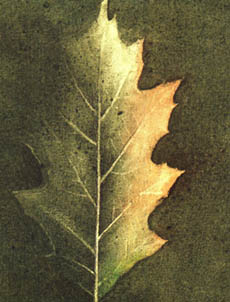

Dílo bylo vá¾nì ohro¾eno za války 1939. Auta jezdila tehdy na døevný plyn a døeva nebylo nikdy dost. Do¹lo ke kácení dubù z roku 1910. Ale ty úseky jsou od silnièních sítí tak daleko, ¾e se to podnikání ukázalo z finanèního hlediska velice nevýhodné a upustilo se od nìho. Pastýø nic nevidìl. Tøicet kilometrù odtud pokojnì pokraèoval v práci. O válce v roce 1939 nic nevìdìl. Stejnì jako o válce ve ètrnáctém roce.

Elzeárda Bouffierda jsem vidìl naposledy v èervnu 1945. Bylo mu tehdy osmdesát sedm let. Vydal jsem se toti¾ zase na cestu do té pustiny. Aèkoliv válka zanechala kraj v zubo¾eném stavu, jezdil tam nyní autobus a zaji¹»oval spojení mezi údolím øeky Durance a horským krajem. Nepoznával jsem u¾ místa svých døívìj¹ích procházek. Ale pøièítal jsem to tomuhle pomìrnì rychlému dopravnímu prostøedku. Také se mnì zdálo, ¾e trasa vede nìjakými novými místy. Musel jsem se zeptat na jméno vesnice, abych zjistil, ¾e jsem pøece jen tam, kde kdysi byly rozvaliny a bezútì¹ná krajina. Autobus mì zavezl do Vergonsu.
V roce 1913 bylo v téhle osadì deset nebo dvanáct domù a mìla tøi obyvatele. Byli zdivoèelí, nenávidìli se a ¾ili z lovù do pastí. Fyzicky i du¹evnì byli témìø jako pravìcí lidé. Kopøivy pusto¹ily kolem nich prázdné domy. Jejich stav byl beznadìjný. Nezbývalo ne¾ èekat na smrt. Byla to tedy situace, která jen stì¾í vytváøí podmínky pro poèestnost.
V¹echno se tu zmìnilo, dokonce i vzduch byl jiný. Místo prudkých vìtrù, vysu¹ujících a nemilosrdných, foukal lehký vìtøík, plný vùní. Z kopcù bylo sly¹et ¹umìní, podobající se zvuku tekoucí vody. Bylo to ¹umìní vìtru v lesích. A posléze nìco je¹tì podivuhodnìj¹ího: usly¹el jsem opravdové ¹plouchání vody, tekoucí do nádr¾e. Spatøil jsem, ¾e tady postavili ka¹nu a ¾e má hodnì vody. Nejvíc mì dojalo, ¾e poblí¾ byla vysazena lípa. Byla u¾ vzrostlá a byl to nepopiratelný symbol znovuzrození.